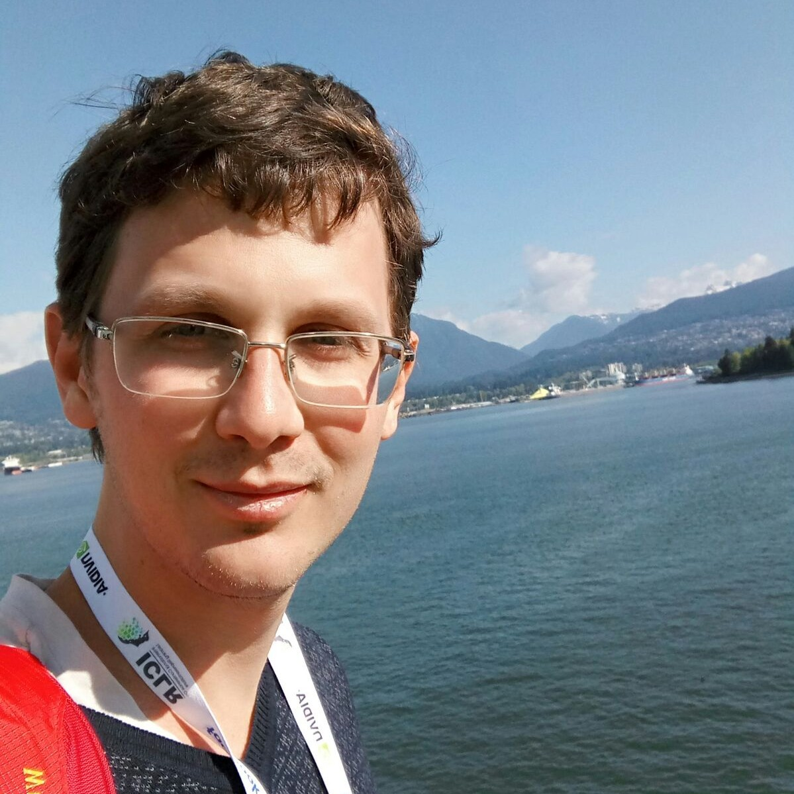

[November 2023] I have recently joined the Gatsby Computational Neuroscience Unit in UCL as a postdoctoral research fellow.
I completed my PhD at the Edmond and Lily Safra Center for Brain Sciences in the Hebrew University of Jerusalem, working in the lab of Professor Yonatan Loewenstein. As an undergraduate, I studied Computer Science and Cognitive Sciences in the Hebrew University.
I’m currently interested in studying the representations formed by unsupervised learning in neural systems, both artificial and biological. More generally, I’m interested in the dynamics of neural computation, and in learning mechanisms of artificial and biological neural networks.
During my PhD studies, my research focus was exploration behavior in complex environments, where decisions are made under uncertainty and have long-term (exploratory) consequences. I was combining theoretical approaches, developing models and algorithms for effective exploration, with experimental approaches for studying exploratory behavior of humans in complex environments.
I have a special interest in the history of neural networks models in computational neuroscience, cognitive sciences, and AI.
The best way of contact is by email: lior.fox@mail.huji.ac.il.
I sometimes tweet, mostly non-academic stuff in Hebrew.
If you find yourself in London, you’re welcome to visit me in the GCNU.
Jekyll template design adapted from researcher theme